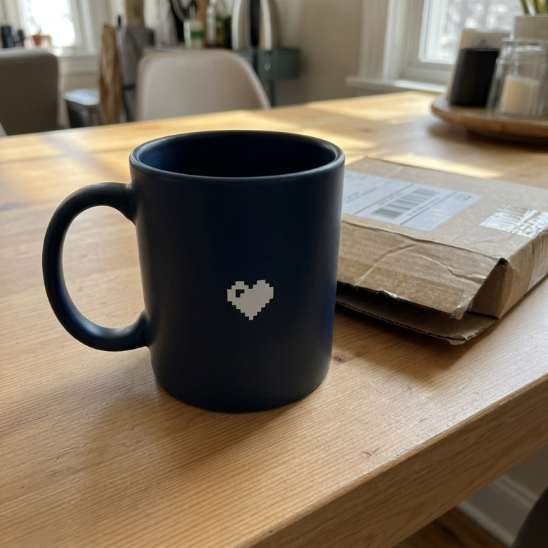
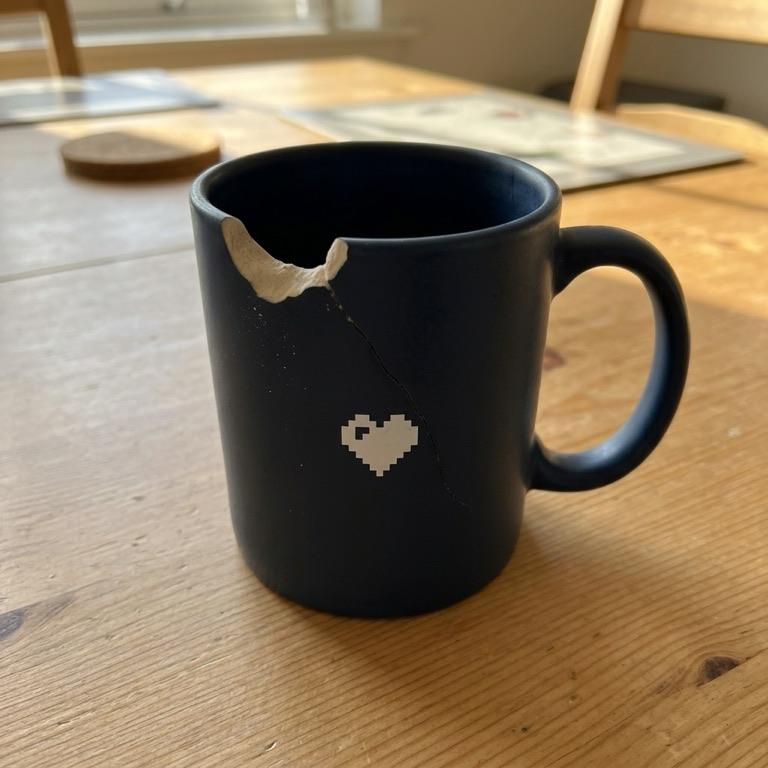

damage——
05 Texto + imagen
Combina partes input_text e input_image en un mensaje de usuario. La imagen va como data URL en base64 o como URL pública.
predicateIs the product visibly damaged (cracked, chipped, or broken)? Ignore shadows and packaging.

